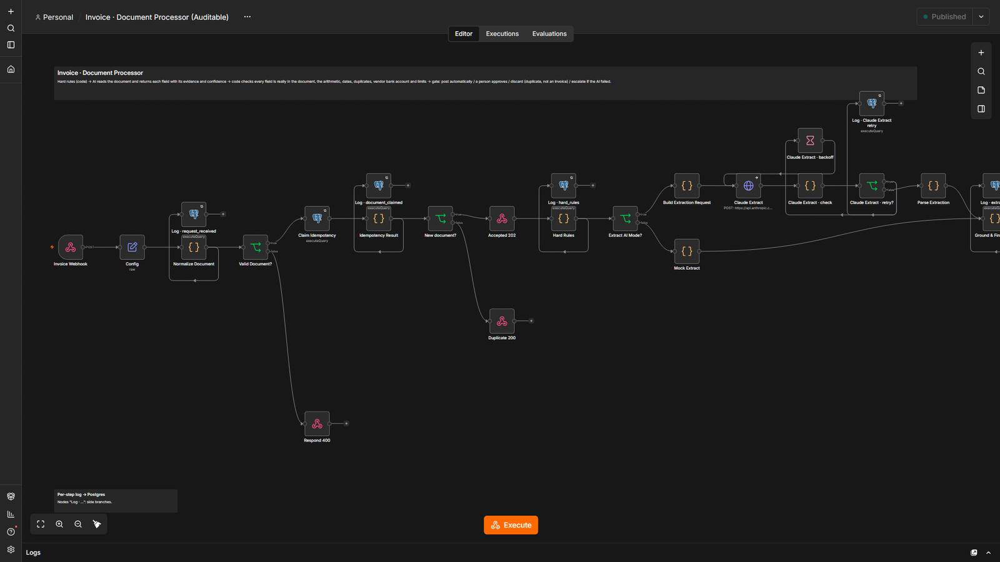
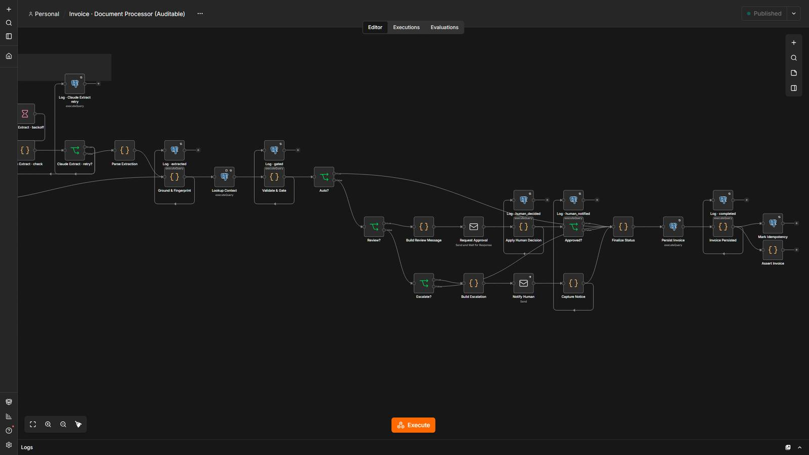
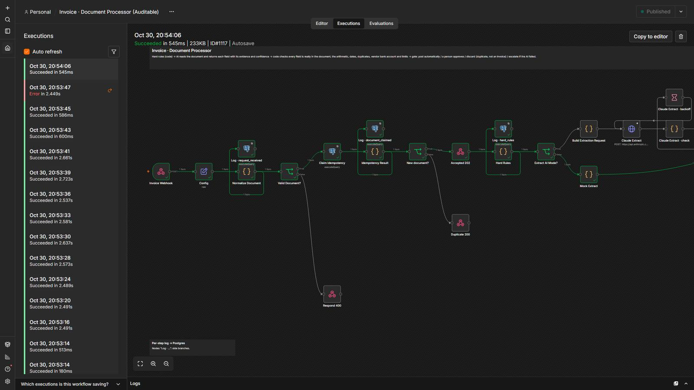

Post invoices only when every check passes.
AI reads the invoice and returns each field with the text it came from. Code verifies the evidence, the arithmetic, the dates, duplicates, the vendor’s bank account and the limit. Anything doubtful goes to a person.
5 steps, and who decides each one.
- Code decides
Hard rules
Text that tries to approve its own invoice is flagged and can never post alone.
- AI reads
Read the invoice
Every field comes with its evidence and a confidence.
- Code decides
Check everything
Evidence in the document, line math, dates, duplicates, vendor bank account, amount limit.
- A person
Approve or reject
Only when a check fails. A changed bank account is never automatic.
- Code decides
Post atomically
Invoice and ledger entry in one statement; a unique index blocks paying twice.
1 workflow
Invoice & Document Processor
Reads invoices and posts them to accounting only when every check passes; anything doubtful goes to a person.
Step by step
- Hard rules flag text that tries to give orders to the AI.
- AI reads the document and returns each field with its evidence and confidence.
- Code checks each field is really in the document, the arithmetic, dates, duplicates, the vendor bank account and the limit.
- Gate: post automatically, a person approves, discard (duplicate / not an invoice) or escalate if the AI failed.
- Posts the invoice and the ledger entry atomically; a unique index blocks double payment.
The system in n8n.
Screenshots of the actual editor and of a real execution, from the local test environment. Click one to open it full size.





